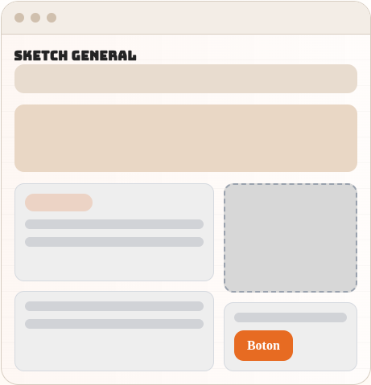
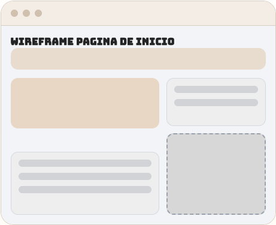
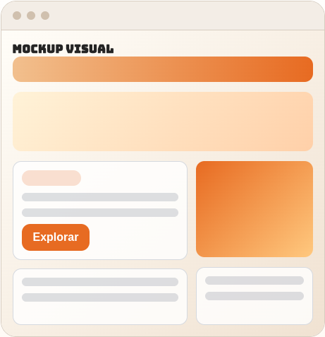
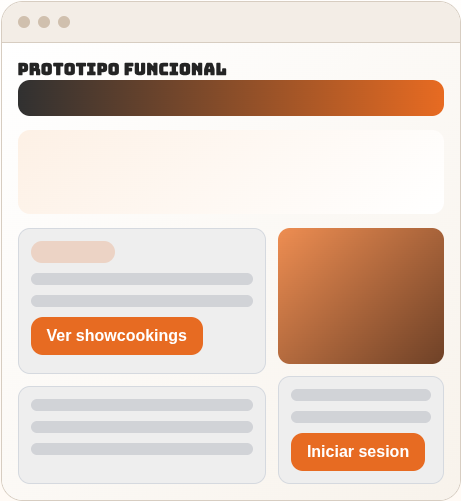

Memoria del proyecto web
ShowCooking CIFP Cuenca
Documento de planificacion y diseno del sitio web ShowCooking, con la definicion del proyecto,
la guia de estilos, las fases del prototipado y el cierre final de la propuesta.
1. Proyecto de la aplicacion web
Analisis funcional
ShowCooking CIFP Cuenca es una aplicacion web pensada para reunir showcookings, recetas y perfiles de
usuario en un mismo entorno. Su finalidad es difundir contenido gastronomico, facilitar la consulta de
recetas y ofrecer a los chefs un espacio desde el que publicar y organizar su trabajo.
Objetivos del sitio web
- Difundir showcookings publicados por el centro o por chefs vinculados al proyecto.
- Permitir consultar recetas detalladas con instrucciones, imagenes y valoraciones.
- Facilitar a los chefs un area de gestion para crear showcookings y anadir recetas.
- Mejorar la participacion de los usuarios mediante favoritos, guardados y puntuaciones.
- Ofrecer una interfaz clara, responsive y centrada en contenido gastronomico audiovisual.
Aspectos adicionales del proyecto
- Se usa una estructura modular de apps Django: core, cooking, cuentas e interacciones.
- El sistema distingue roles de usuario, con foco especial en el flujo del chef.
- La pagina principal incorpora busqueda y bloques de descubrimiento de contenido.
- Los contenidos publicados se ordenan por fecha y valoracion media para destacar calidad.
- La plataforma se adapta a distintos dispositivos mediante hojas de estilo responsive.
Funcionalidad: acceso y perfiles
- Registro e inicio de sesion de usuarios.
- Panel de usuario y perfil publico.
- Cierre de sesion y diferenciacion de roles.
Funcionalidad: contenido culinario
- Listado principal de showcookings publicados.
- Detalle de showcooking con video de YouTube embebido.
- Listado y detalle de recetas publicadas.
Funcionalidad: interaccion
- Valoraciones de 1 a 5 estrellas en recetas y showcookings.
- Guardado de recetas para consulta posterior.
- Marcado de showcookings favoritos.
Guia de estilos del sitio web
Sistema visual
La guia toma como referencia la identidad visual ya presente en la base del proyecto: naranja como
color principal, grises suaves para apoyo, blanco para areas de lectura y tipografia de impacto para
titulos. La intencion es transmitir cercania, energia y contexto gastronomico.
Colores del sitio web
Naranja principal
Color de accion, botones, cabeceras y acentos.
#E86B1C
Gris claro
Fondos neutros, bloques informativos y zonas de descanso visual.
#F8F9FB
Gris soporte
Cabeceras secundarias, bordes y ayudas visuales.
#9A9AA8
Verde adicional
Estado positivo, avisos suaves y componente visual extra en CSS.
#2D6A4F
ShowCooking
Tipografia principal para titulos: Bungee. Se usa en cabeceras, nombres de seccion y llamadas
visuales porque aporta un tono reconocible, expresivo y joven.
Tipografia secundaria para contenido: familia sans serif del sistema. Se prioriza legibilidad
en formularios, descripciones, instrucciones de recetas, comentarios y textos de apoyo.
Jerarquia propuesta: H1 muy expresivo, H2 robusto, texto base entre 16 y 18 px, contrastes
altos y espaciado amplio para lectura rapida en movil.
Iconografia y logotipos
★ Valoraciones
❤ Favoritos
▶ Video
👨 Chef
El sitio mantiene el logotipo institucional del CIFP y puede ampliarse con una marca derivada
de ShowCooking para usarla en favicon, portada y piezas promocionales.
Mapa de navegacion del sitio web
InicioBuscador, destacados y acceso.
RecetasListado publico de recetas publicadas.
Login / RegistroEntrada al sistema y alta.
PerfilPanel propio y perfil publico.
Detalle showcookingVideo, descripcion, valoracion y favoritos.
Detalle recetaImagen, instrucciones, guardado y valoracion.
Dashboard chefGestion de eventos y recetas.
Crear contenidoAlta de showcooking y recetas asociadas.
2. Prototipo de la aplicacion web
Proceso de diseno
El proceso de prototipado se divide en cuatro fases. En cada una de ellas se concreta el numero de
pantallas, la funcion de cada vista y los elementos principales que tendra la interfaz antes de pasar
a la implementacion definitiva.
Boceto (sketch)
Se definen 6 pantallas principales: inicio, listado de recetas, detalle de showcooking,
detalle de receta, login/registro y dashboard del chef. En el boceto se marca la estructura
general de cada una: cabecera, menu, zonas de contenido, formularios, bloques multimedia y pie.
Esquema (wireframe)
El wireframe ordena visualmente cada pagina y fija la posicion del buscador, las tarjetas, los
formularios y las llamadas a la accion. Para esta fase resulta adecuado usar Figma o Penpot,
ya que permiten revisar la jerarquia visual y la navegacion antes de preparar la maqueta final.
Wireframe pagina de inicio
Maqueta (mockup)
La maqueta incorpora color, tipografia y recursos visuales. En esta fase se define con mas
precision el aspecto final de la aplicacion, manteniendo la linea cromatica basada en naranja,
blanco y gris y preparando versiones adaptadas a escritorio y movil.
Prototipo navegable
El prototipo recoge el flujo principal de uso de la aplicacion: acceso desde inicio, consulta
de recetas, entrada al detalle de showcookings, identificacion de usuarios y gestion del area de
chef. De este modo se puede comprobar la coherencia general del sitio antes de su desarrollo
completo.
Pantallas incluidas y funcion de cada una
- Inicio: destacar contenido, buscar y conducir al usuario hacia recetas o showcookings.
- Recetas: listar recetas publicadas con acceso a su detalle.
- Detalle de showcooking: mostrar video, chef, descripcion, recetas ligadas y valoraciones.
- Detalle de receta: mostrar imagen, descripcion, instrucciones y acciones de guardado.
- Login y registro: autenticar usuarios y permitir alta.
- Dashboard chef: gestionar showcookings propios y crear nuevo contenido.
Capturas del documento
Evidencias visuales
En este apartado se incluyen las capturas correspondientes a cada fase del prototipado, con el fin de
dejar constancia visual del trabajo realizado y reunir todas las evidencias dentro del mismo documento.
Captura del boceto
Vista estructural inicial con distribucion general de bloques, menu, tarjetas y CTA.

Captura del wireframe
Esquema de baja fidelidad para validar jerarquia visual y ubicacion de elementos.

Captura del mockup
Propuesta visual con color, tipografia y composicion afines al tono gastronomico del sitio.

Captura del prototipo
Representacion del flujo funcional final que conecta con la aplicacion Django existente.

3. SDFG / ASDF
Ampliacion CSS
En este apartado se incorpora un recurso adicional dentro de la hoja de estilos, pensado para ampliar
el diseno visual del documento y demostrar la aplicacion de un componente CSS propio enlazado desde la
cabecera.
Desarrollo del apartado
- Crear un ASDF: se diseña un bloque visual extra para remarcar informacion relevante.
- Aplicar ASDF: se incorpora a la hoja entrega.css y se vincula desde la cabecera.
- En ASDF: se utiliza un tono verde de apoyo para diferenciarlo del color principal.
- Para ASDF: se reserva para avisos, mensajes destacados o informacion complementaria.
- El ASDFdo: queda representado en un banner reutilizable con degradado y sombra.
Banner CSS adicional pensado para avisos, recordatorios o mensajes destacados.
Importacion de la hoja de estilos
La hoja de estilos se importa mediante un enlace dentro de la cabecera del documento HTML. De
esta forma, el diseno queda centralizado en un archivo CSS externo y el documento puede verse o
imprimirse manteniendo el mismo estilo.
Enlace utilizado: ./assets/entrega.css
Conclusion
Cierre
El proyecto ShowCooking presenta una propuesta coherente tanto a nivel funcional como visual. La idea
principal del sitio queda bien definida, las secciones responden a necesidades reales del usuario y la
estructura de navegacion facilita el acceso a showcookings, recetas y perfiles. Ademas, la guia de
estilos y el prototipado permiten concretar la linea grafica del sitio y sirven como base para seguir
desarrollando la aplicacion de forma ordenada.